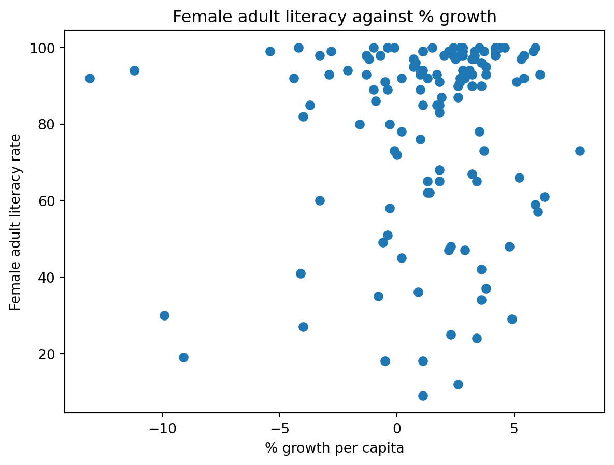
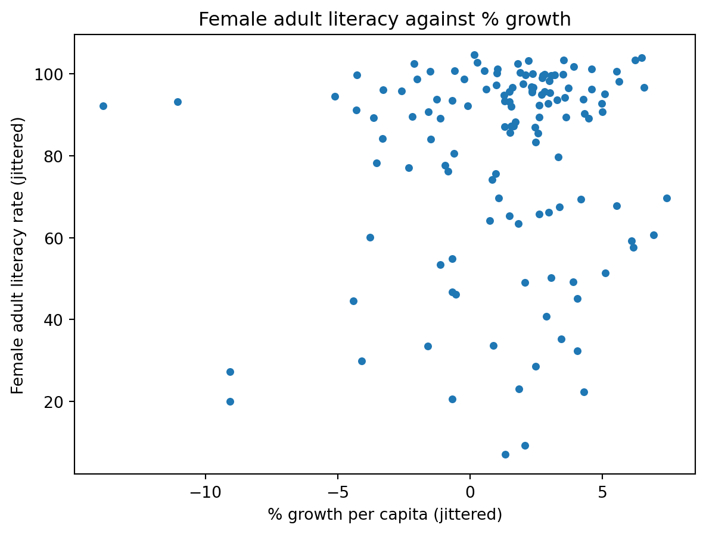
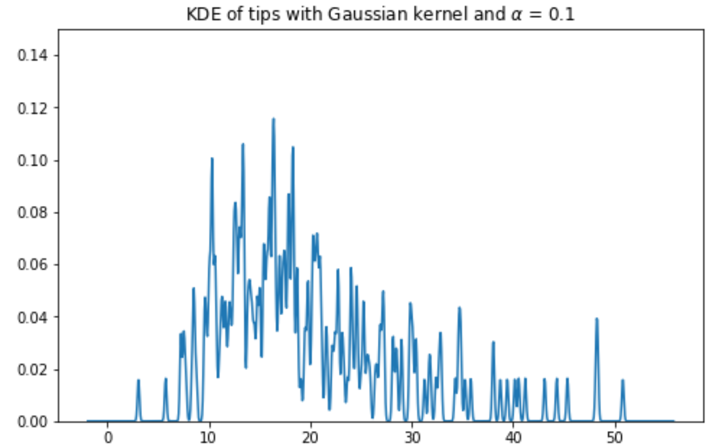
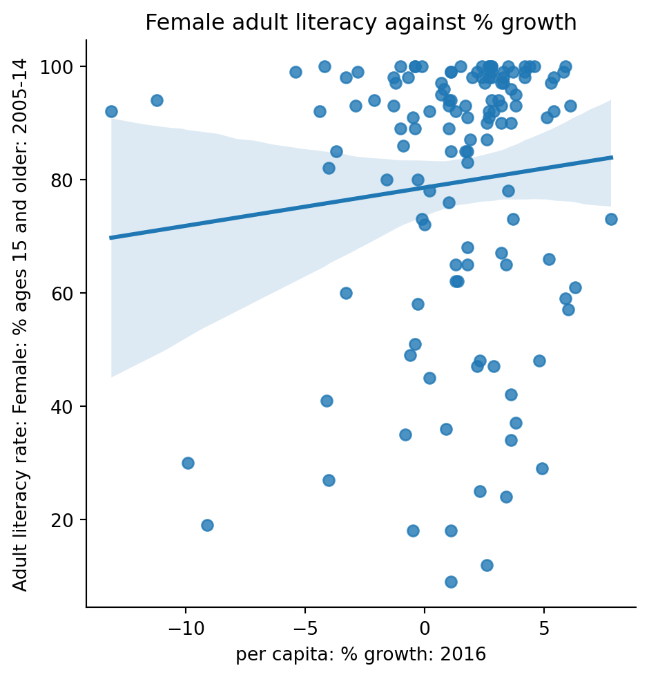

Code
import seaborn as sns
titanic = sns.load_dataset('titanic')
sns.rugplot(titanic['age'],height = 0.5);
In the last lecture, we learned that density curves are smooth, continuous functions that represent a distribution of values. In this section, we’ll learn how to construct density curves using Kernel Density Estimation (KDE).
Kernel Density Estimation involves a technique called smoothing - a process applied to a distribution of values that allows us to analyze the more general structure of the dataset.
Many of the visualizations we learned during the last lecture are examples of smoothing. Histograms are smoothed versions of one-dimensional rug plots, and hex plots are smoother alternatives to two-dimensional scatter plots. They remove the detail from individual observations so we can visualize the larger properties of our distribution.
import seaborn as sns
titanic = sns.load_dataset('titanic')
sns.rugplot(titanic['age'],height = 0.5);
sns.histplot(titanic['age']);
Kernel Density Estimation is a smoothing technique that allows us to estimate a density curve (also known as a probability density function) from a set of observations. There are a few steps in this process:
Suppose we have 5 data points: \([2.2, 2.8, 3.7, 5.3, 5.7]\). We wish to recreate the following Kernel Density Estimate:
data = [2.2, 2.8, 3.7, 5.3, 5.7]
sns.kdeplot(data);Let’s walk through each step to construct this density curve.
To begin generating a density curve, we need to choose a kernel and bandwidth value (\(\alpha\)). What are these exactly? A kernel is a density curve itself, and the bandwidth (\(\alpha\)) is a measure of the kernel’s width. Recall that a valid density has an area of 1.
At each of our 5 points (depicted in the rug plot on the left), we’ve placed a Gaussian kernel with a bandwidth parameter of alpha = 1. We’ll explore what these are in the next section.
Rugplot of Data

Kernelized Data

Notice how these 5 kernels are density curves - meaning they each have an area of 1. In Step 3, we will be summing each these kernels, and we want the result to be a valid density that has an area of 1. Therefore, it makes sense to normalize our current set of kernels by multiplying each by \(\frac{1}{5}\).
Kernelized Data
Normalized Kernels

Our kernel density estimate (KDE) is the sum of the normalized kernels along the x-axis. It is depicted below on the right.
Normalized Kernels
Kernel Density Estimate

A kernel (for our purposes) is a valid density function. This means it:

A general “KDE formula” function is given above.
i.
*\(\alpha\) (alpha) is the bandwidth or smoothing parameter.
The most common kernel is the Gaussian kernel. The Gaussian kernel is equivalent to the Gaussian probability density function (the Normal distribution), centered at the observed value \(x_i\) with a standard deviation of \(\alpha\) (this is known as the bandwidth parameter).
\(K_a(x, x_i) = \frac{1}{\sqrt{2\pi\alpha^{2}}}e^{-\frac{(x-x_i)^{2}}{2\alpha^{2}}}\)
import numpy as np
import matplotlib.pyplot as plt
def gaussian_kernel(alpha, x, z):
return 1.0/np.sqrt(2. * np.pi * alpha**2) * np.exp(-(x - z) ** 2 / (2.0 * alpha**2))
xs = np.linspace(-5, 5, 200)
alpha = 1
kde_curve = [gaussian_kernel(alpha, x, 0) for x in xs]
plt.plot(xs, kde_curve);
If you’ve taken a probability class, you’ll recognize that the mean of this Gaussian kernel is \(x_i\) and the standard deviation is \(\alpha\). Increasing \(\alpha\) - equivalently, the bandwidth - smoothens the density curve. Larger values of \(\alpha\) are typically easier to understand; however, we begin to lose important distributional information.
Here is how adjusting \(\alpha\) affects a distribution in some variable from an arbitrary dataset.
Gaussian Kernel, \(\alpha\) = 0.1

Gaussian Kernel, \(\alpha\) = 1

Gaussian Kernel, \(\alpha\) = 2

Gaussian Kernel, \(\alpha\) = 10

Another example of a kernel is the Boxcar kernel. The boxcar kernel assigns a uniform density to points within a “window” of the observation, and a density of 0 elsewhere. The equation below is a Boxcar kernel with the center at \(x_i\) and the bandwidth of \(\alpha\).
\(K_a(x, x_i) = \begin{cases} \frac{1}{\alpha}, & |x - x_i| \le \frac{\alpha}{2}\\ 0, & \text{else } \end{cases}\)
def boxcar_kernel(alpha, x, z):
return (((x-z)>=-alpha/2)&((x-z)<=alpha/2))/alpha
xs = np.linspace(-5, 5, 200)
alpha=1
kde_curve = [boxcar_kernel(alpha, x, 0) for x in xs]
plt.plot(xs, kde_curve);
The diagram on the right is how the density curve for our 5 point dataset would have looked had we used the Boxcar kernel with bandwidth \(\alpha\) = 1.


Up until now, we’ve discussed how to visualize single-variable distributions. Going beyond this, we want to understand the relationship between pairs of numerical variables.
Scatter plots are one of the most useful tools in representing the relationship between two quantitative variables. They are particularly important in gauging the strength, or correlation between variables. Knowledge of these relationships can then motivate decisions in our modeling process.
For example, let’s plot a scatter plot comparing the Maternal Height and Birth Weight colums, using both matplotlib and seaborn.
import pandas as pd
births = pd.read_csv("data/baby.csv")
births.head(5)
# Matplotlib Example
plt.scatter(births['Maternal Height'], births['Birth Weight'])
plt.xlabel('Maternal Height')
plt.ylabel('Birth Weight');
# Seaborn Example
sns.scatterplot(data = births, x = 'Maternal Height', y = 'Birth Weight',
hue = 'Maternal Smoker')<AxesSubplot:xlabel='Maternal Height', ylabel='Birth Weight'>
This is an example where color is used to add a third dimension to our plot. This is possible with the hue paramater in seaborn, which adds a categorical column encoding to an existing visualization. This way, we can look for relationships in Maternal Height and Birth Weight in both maternal smokers and non-smokers. If we wish to see the relationship’s strength more clearly, we can use sns.lmplot.
sns.lmplot(data = births, x = 'Maternal Height', y = 'Birth Weight',
hue = 'Maternal Smoker', ci = False);
We can make out a weak, positive relationship in the mother’s height and birth weight for both maternal smokers and non-smokers (the baseline is slightly lower in maternal smokers).
As you may have noticed, the scatterplots of Maternal Height vs. Birth Weight have many densely plotted areas. Many of the points are on top of one other! This makes it difficult to tell exactly how many babies are plotted in each the more densely populated regions of the graph. This can arise when the tools used for measuring data have low granularity, many different values are rounded to the same value, or if the ranges of the two variables differ greatly in scale.
We can overcome this by introducing a small amount of uniform random noise to our data. This is called jittering. Let’s see what happens when we introduce noise to the Maternal Height.
births["Maternal Height (jittered)"] = births["Maternal Height"] + np.random.uniform(-0.2, 0.2, len(births))
sns.lmplot(data = births, x = 'Maternal Height (jittered)', y = 'Birth Weight',
hue = 'Maternal Smoker', ci = False);
This plot more clearly shows that most of the data is clustered tightly around the point (62.5,120) and gradually becomes more loose further away from the center. It is much easier for us and others to see how the data is distributed. In conclusion, jittering helps us better understand our own data (Goal 1) and communicate results to others (Goal 2).
Unfortunately, our scatter plots above suffered from overplotting, which made them hard to interpret. And with a large number of points, jittering is unlikely to resolve the issue. Instead, we can look to hex plots and contour plots.
Hex Plots can be thought of as a two dimensional histogram that shows the joint distribution between two variables. This is particularly useful working with very dense data.
sns.jointplot(data = births, x = 'Maternal Pregnancy Weight',
y = 'Birth Weight', kind = 'hex')<seaborn.axisgrid.JointGrid at 0x2190cbf24c0>
The axes are evidently binned into hexagons, which makes the linear relationship easier to decipher. Darker regions generally indicate a higher density of points.
On the other hand, contour plots are two dimensional versions of density curves with marginal distributions of each variable on the axes. We’ve used very similar code here to generate our contour plots, with the addition of the kind = 'kde' and fill = True arguments.
sns.jointplot(data = births, x = 'Maternal Height', y = 'Birth Weight',\
kind = 'kde', fill = True)<seaborn.axisgrid.JointGrid at 0x2190cc76640>
These last two lectures have covered visualizations in great depth. We looked at various forms of visualizations, plotting libraries, and high-level theory.
Much of this was done to uncover insights in data, which will prove necessary for the modeling process. A strong graphical correlation between two variables hinted an underlying relationship that has reason for further study. However, relying on visual relationships alone is limiting - not all plots show association. The presence of outliers and other statistical anomalies make it hard to interpret data.
Transformations are the process of manipulating data to find significant relationships between variables. These are often found by applying mathematical functions to variables that “transform” their range of possible values and highlight some previously hidden associations between data.
When a distribution has a large dynamic range, it can be useful to take the logarithm of the data. For example, computing the logarithm of the ticket prices on the Titanic reduces skeweness and yields a distribution that is more “spread” across the x-axis. While it makes individual observations harder to interpret, the distribution is more favorable for subsequent analysis.


Transformations are perhaps most useful to linearize a relationship between variables. If we find a transformation to make a scatter plot of two variables linear, we can “backtrack” to find the exact relationship between the variables. Linear relationships are particularly simple to interpret, and we’ll be doing a lot of linear modeling in Data 100 - starting next week!
Say we want to understand the relationship between healthcare and life expectancy. Intuitively there should be a positive correlation, but upon plotting values from a dataset, we find a non-linear relationship that is somewhat hard to understand. However, applying a logarithmic transformation to both variables - healthcare and life expectancy - results in a scatter plot with a linear trend that we can interpret.


How can we find the relationship between the original variables? We know that taking a log of both axes gave us a linear relationship, so we can say (roughly) that
\[\log y= a\times\log x + b\]
Solving for \(y\) implies a power relationship in the original plot.
\[y= e^{a\times\log x + b}\] \[y= Ce^{a\times\log x}\] \[y= Cx^{a}\]
How did we know that taking the logarithm of both sides would result in a linear relationship? The Tukey-Mosteller Bulge Diagram is helpful here. We can use the direction of the buldge in our original data to find the appropriate transformations that will linearize the relationship. These transformations are found on axes that are nearest to the buldge. The buldge in our earlier example lay in Quadrant 2, so the transformations \(\log x\), \(\sqrt x\), \(y^{2}\), or \(y^{3}\) are possible contenders. It’s important to note that this diagram is not perfect, and some transformations will work better than others. In our case, \(\log x\) and \(\log y\) (found in Quadrant 3) were the best.

Visualization requires a lot of thought! - There are many tools for visualizing distributions. - Distribution of a single variable: 1. rug plot 2. histogram 3. density plot 4. box plot 5. violin plot - Joint distribution of two quantitative variables: 1. scatter plot 2. hex plot 3. contour plot.
This class primarily uses seaborn and matplotlib, but Pandas also has basic built-in plotting methods. Many other visualization libraries exist, and plotly is one of them. - plotly creates very easily creates interactive plots. - plotly will occasionally appear in lecture code, labs, and assignments!
Next, we’ll go deeper into the theory behind visualization.
This section marks a pivot to the second major topic of this lecture - visualization theory. We’ll discuss the abstract nature of visualizations and analyze how they convey information.
Remember, we had two goals for visualizing data. This section is particularly important in:
Visualizations are able to convey information through various encodings. In the remainder of this lecture, we’ll look at the use of color, scale, and depth, to name a few.
One detail that we may have overlooked in our earlier discussion of rugplots is the importance of encodings. Rugplots are effective visuals because they utilize line thickness to encode frequency. Consider the following diagram:
Encodings are also useful for representing multi-dimensional data. Notice how the following visual highlights four distinct “dimensions” of data:
The human visual perception sytem is only capable of visualizing data in a three-dimensional plane, but as you’ve seen, we can encode many more channels of information.
However, we should be careful to not misrepresent relationships in our data by manipulating the scale or axes. The visualization below improperly portrays two seemingly independent relationships on the same plot. The authors have clearly changed the scale of the y-axis to mislead their audience.

Notice how the downwards-facing line segment contains values in the millions, while the upwards-trending segment only contains values near three hundred thousand. These lines should not be intersecting.
When there is a large difference in the magnitude of the data, it’s advised to analyze percentages instead of counts. The following diagrams correctly display the trends in cancer screening and abortion rates.

Great visualizations not only consider the scale of the data, but also utilize the axes in a way that best conveys information. For example, data scientists commonly set certain axes limits to highlight parts of the visualization they are most interested in.


The visualization on the right captures the trend in coronavirus cases during the month March in 2020. From only looking at the visualization on the left, a viewer may incorrectly believe that coronavirus began to skyrocket on March 4th, 2020. However, the second illustration tells a different story - cases rose closer to March 21th, 2020.
Color is another important feature in visualizations that does more than what meets the eye.
Last lecture, we used color to encode a categorical variable in our scatter plot. In this section, we will discuss uses of color in novel visualizations like colormaps and heatmaps.
5-8% of the world is red-green color blind, so we have to be very particular about our color scheme. We want to make these as accessible as possible. Choosing a set of colors which work together is evidently a challenging task!
Colormaps are mappings from pixel data to color values, and they’re often used to highlight distinct parts of an image. Let’s investigate a few properties of colormaps.
Jet Colormap
Viridis Colormap
The jet colormap is infamous for being misleading. While it seems more vibrant than viridis, the aggressive colors poorly encode numerical data. To understand why, let’s analyze the following images.

The diagram on the left compares how a variety of colormaps represent pixel data that transitions from a high to low intensity. These include the jet colormap (row a) and grayscale (row b). Notice how the grayscale images do the best job in smoothly transitioning between pixel data. The jet colormap is the worst at this - the four images in row (a) look like a conglomeration of individual colors.
The difference is also evident in the images labeled (a) and (b) on the left side. The grayscale image is better at preserving finer detail in the vertical line strokes. Additionally, grayscale is preferred in x-ray scans for being more neutral. The intensity of dark red color in the jet colormap is frightening and indicates something is wrong.
Why is the jet colormap so much worse? The answer lies in how its color composition is percieved to the human eye.
Jet Colormap Perception
Viridis Colormap Perception
The jet colormap is largely misleading because it is not perceptually uniform. Perceptually uniform colormaps have the property that if the pixel data goes from 0.1 to 0.2, the perceptual change is the same as when the data goes from 0.8 to 0.9.
Notice how the said uniformity is present within the linear trend displayed in the viridis colormap. On the other hand, the jet colormap is largely non-linear - this is precisely why it’s considered a worse colormap.
In our earlier discussion of multi-dimensional encodings, we analyzed a scatter plot with four pseudo-dimensions: the two axes, area, and color. Were these appropriate to use? The following diagram analyzes how well the human eye can distinguish between these “markings”.
There are a few key takeaways from this diagram
Conditioning is the process of comparing data that belong to seperate groups. We’ve seen this before in overlayed distributions, side-by-side box-plots, and scatter plots with categorical encodings. Here, we’ll introduce terminology that formalizes these examples.
Consider an example where we want to analyze income earnings for male and females with varying levels of education. There are multiple ways to compare this data.


The barplot is an example of juxtaposition: placing multiple plots side by side, with the same scale. The scatter plot is an example of superposition: placing multiple density curves, scatter plots on top of each other.
Which is better depends on the problem at hand. Here, superposition makes the precise wage difference very clear from a quick glance. But many sophisticated plots convey information that favors the use of juxtaposition. Below is one example.

The last component to a great visualization is perhaps the most critical - the use of context. Adding informative titles, axis labels, and descriptive captions are all best practices that we’ve heard repeatedly in Data 8.
A publication-ready plot (and every Data 100 plot) needs:
Captions should be: